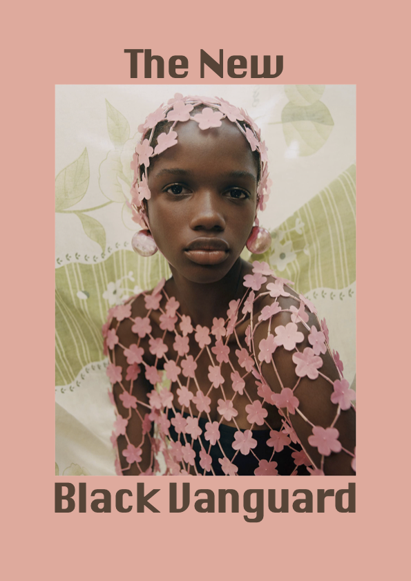

For my first assignment in the course Fundamentals of Graphic Design, I chose to create a layout in inDesign - which could have fitted in a coffee magazine. My text and images were inspired by The New Black Vanguard. The New Black Vanguard brings together photographers from different countries who work in different fields, but with the same goal: to change old models of representation and elevate the black motif in the world of photography, design, and fashion.